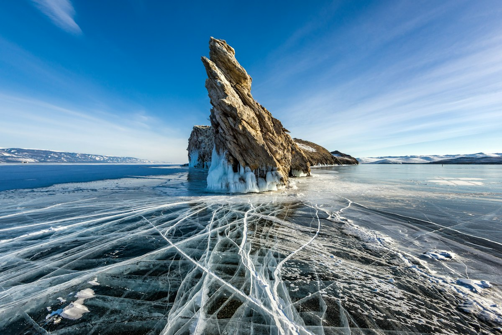
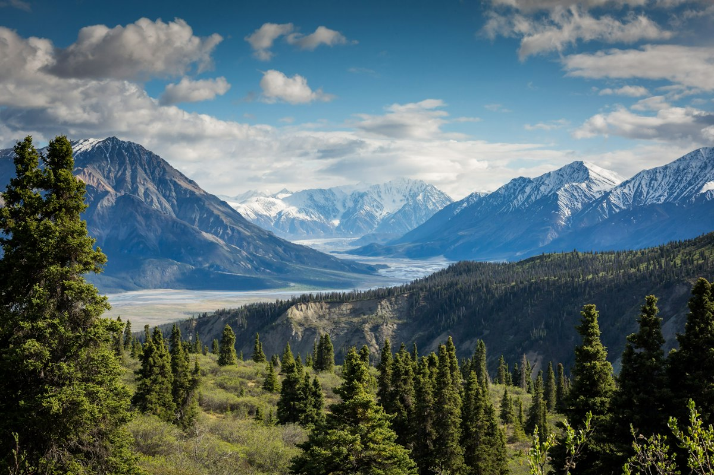
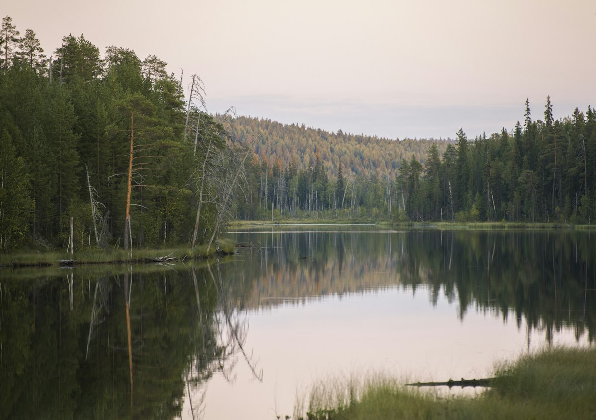
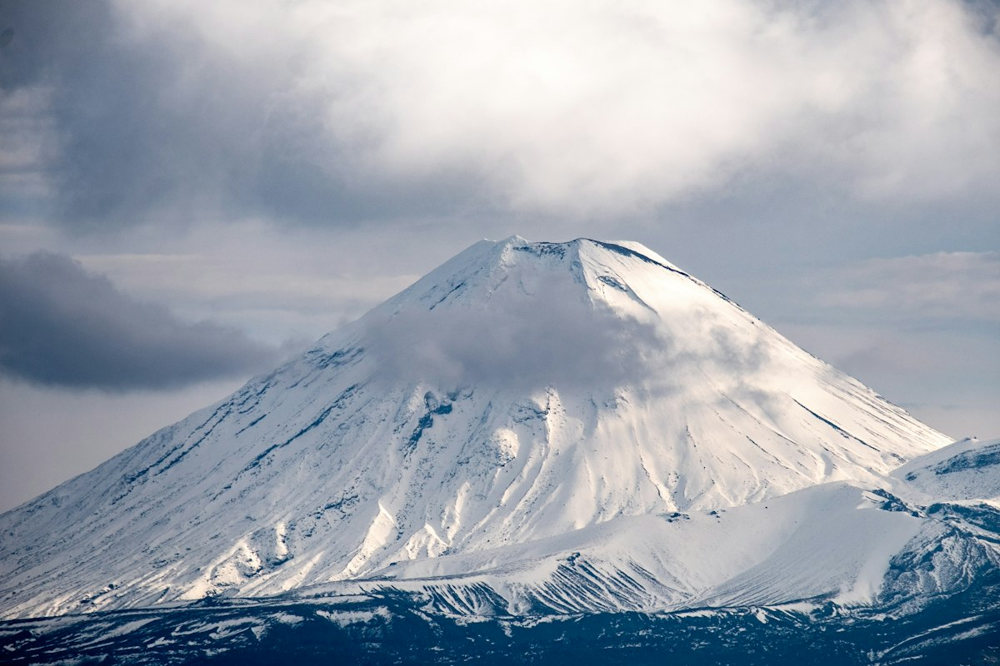

01 / 04↗Байкал
Лёд, в котором отражается небо
КОЛЛЕКЦИЯ ПУТЕШЕСТВИЙ / 2026
От прозрачного льда Байкала до вулканов Камчатки. Выберите путешествие под своё настроение.

01 / 04↗Лёд, в котором отражается небо

02 / 04↗Там, где горы становятся ближе

03 / 04↗Тишина северных озёр

04 / 04↗На краю земли и океана
По этим параметрам маршрутов пока нет. Попробуйте изменить фильтры.
Выберите направление, чтобы рассмотреть его на Яндекс Карте и перейти к маршруту.
Для загрузки карты необходимо подключение к интернету. Точки обозначают регион путешествия, а не подробную линию маршрута.